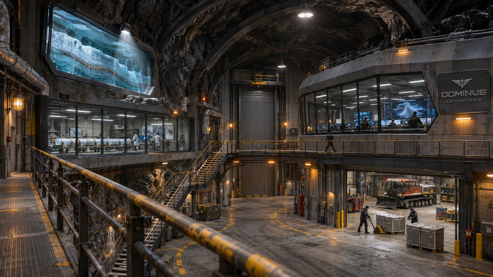

NÚCLEO ORIGINAL // UNIDADE 01
Hades
A instalação subterrânea antártica ligada às primeiras pesquisas do Projeto DOOM. A documentação disponível a trata como o centro original da operação.
O arquivo não dispõe de planta completa nem confirma o estado de todos os setores internos.
ENTRAR NO HADES PELO ELEVADOR